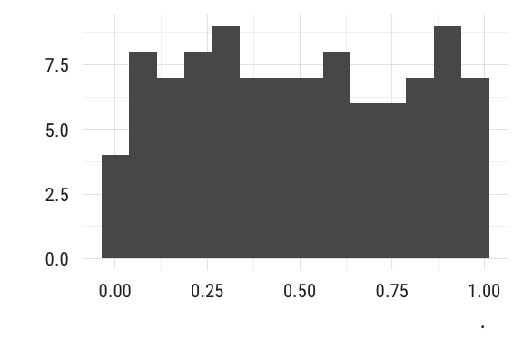
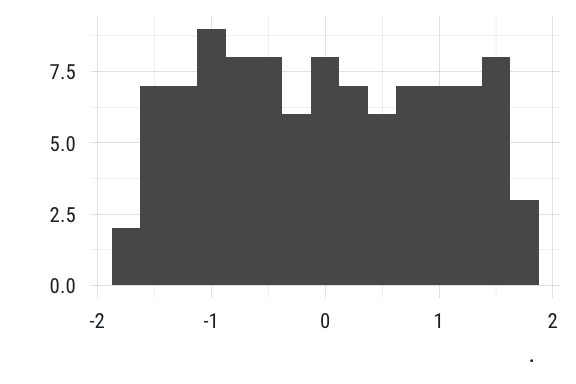

tfse = The First Scriptorium Emporium
To install the package
## install from github devtools::install_github("mkearney/tfse")
Load the package and go
## load pkg library(tfse) ## use functions like col2hex col2hex("greenyellow") #> [1] "#ADFF2F" ## rescale values x <- sample(-10:100, 100) ## rescale standard rescale_standard(x) %>% ggplot2::qplot(binwidth = .075) + theme_mwk()

## rescale normal rescale_normal(x) %>% ggplot2::qplot(binwidth = .25) + theme_mwk()

## rescale log rescale_log(x) %>% ggplot2::qplot(binwidth = .15) + theme_mwk()
## rescale standard rescale_pointscale(x, 1, 10) %>% ggplot2::qplot(binwidth = .5) + theme_mwk()
View the help documentation
## view R help documentatoin help(package = "tfse")